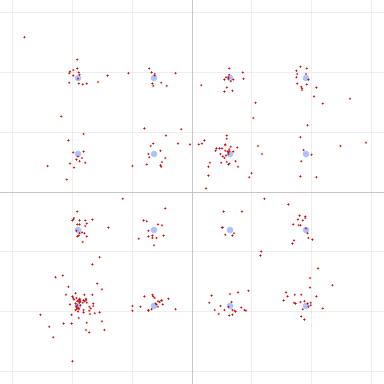

ISI in one paragraph
OFDM chops data into many slow subcarriers and prepends each symbol with a cyclic prefix (CP) — a copy of the symbol's tail. The CP is a guard buffer: as long as the channel's echoes (its delay spread) die out within the CP, every OFDM symbol stays clean and its subcarriers stay orthogonal. Push an echo past the CP, though, and energy from one symbol spills into the next — inter-symbol interference — and the subcarriers start to smear into each other too.
DART's CP is deliberately short: 4 samples at 32 kHz = 125 µs. That was a bet — that a 2 m/70 cm FM link at close range has almost no RF multipath, so a long CP would just waste airtime. The reader's question is really: was that bet safe?
Building a multipath channel
To test it we added a two-tap echo channel to the simulator — y[n] = x[n] + a·x[n−d] — with a knob for echo delay d and amplitude a. Then we swept the
delay against a strong (half-amplitude) echo on 16QAM and watched the EVM:
| Echo delay | In time | EVM | |
|---|---|---|---|
| 0–1 samples | 0–31 µs | 0.1% | clean |
| 2 samples | 63 µs | 3.5% | |
| 4 samples | 125 µs (= CP) | 4.2% | still absorbed |
| 5 samples | 156 µs (> CP) | 7.9% | ISI kicks in |
| 8 samples | 250 µs | 11.3% | |
| 16 samples | 500 µs | 14.9% | |
| 24 samples | 750 µs | 19.9% |
There's the classic ISI signature: EVM stays low while the echo fits inside the CP (≤ 4 samples), then roughly doubles the moment the echo crosses the CP boundary and climbs steadily from there. You can see it in the constellation — a strong echo well beyond the CP smears every one of the 16 points:

(By contrast an echo within the CP, isi-within-cp.png, stays tight — the equalizer folds it into the channel estimate and removes it.)
{kind=link}
Confirming the cause: grow the CP, cure the ISI
If that degradation is really ISI, then lengthening the CP to cover the echo should fix it. We fixed the echo at 8 samples and grew the CP:
| CP length | EVM |
|---|---|
| 4 samples | 11.3% |
| 6 samples | 9.0% |
| 8 samples (= echo) | 8.9% |
| 12 / 16 samples | 9.1% (flat) |
Exactly as expected: EVM drops as the CP grows and plateaus once the CP covers the echo (8 samples). The part that a bigger CP removes is the ISI; the residual ~9% is the echo's frequency-selective fading (a different effect the CP doesn't address). This cleanly separates ISI from everything else.
The question that actually matters: is our CP big enough?
A synthetic echo proves the mechanism, but the practical question is whether DART's real channel — the SBC codec and radio audio path — disperses energy past 125 µs. Both have impulse responses longer than a single sample, so it's a fair worry. We swept the CP through the real SBC codec with no artificial echo at all:
| CP length | EVM |
|---|---|
| 4 samples | 0.4% |
| 6 / 8 / 12 / 16 samples | 0.4% (unchanged) |
Flat. Growing the CP buys nothing through the SBC path — so the codec introduces no dispersion beyond the existing 4-sample CP. (It adds a fixed ~73-sample delay, but that's absorbed by the guard interval between the preamble and payload; delay is not the same as delay spread.)
Verdict: the short CP was a safe bet
- The CP works exactly as designed — echoes up to 125 µs are absorbed invisibly; only beyond that does ISI appear, with a sharp, well-behaved knee.
- The real SBC/audio path has no dispersion the CP misses — a longer CP would be pure wasted airtime.
- RF multipath at these ranges is orders of magnitude smaller than 125 µs (a reflection would need a ~37 km path-length difference to fill the CP), so DART has enormous margin against real over-the-air echoes.
So ISI is not a limiter for DART — the earlier findings stand: the ceiling is raw SNR, and phase noise is handled by the pilots. The one scenario where you'd revisit the CP is a genuinely dispersive path — long-range tropo, heavy urban multipath, or a repeater with significant group-delay ripple — and now we have the tool to measure exactly how much CP that would need.
Reproduce this
The multipath channel and CP override are in the test tool:
# Delay-spread sweep — watch the knee at the CP (4 samples):
dart run test/dart_modem_test.dart pipeline -m 4 --echo 8 --echoamp 0.5 -o out.wav "message"
# Grow the CP to cure a fixed echo:
dart run test/dart_modem_test.dart pipeline -m 4 --echo 8 --cp 8 -o out.wav "message"
# Check the real SBC path for hidden dispersion:
dart run test/dart_modem_test.dart pipeline -m 4 --bitpool 40 --cp 16 -o out.wav "message"
Method: DART software pipeline with an added two-tap echo channel and a cyclic-prefix override, 16QAM, half-amplitude echo. Constellation diagrams from the DART test tool. Sixth in a series; companions cover the real-world findings, SBC bitpool, SBC bit allocation, phase noise & pilots, and code shortening.